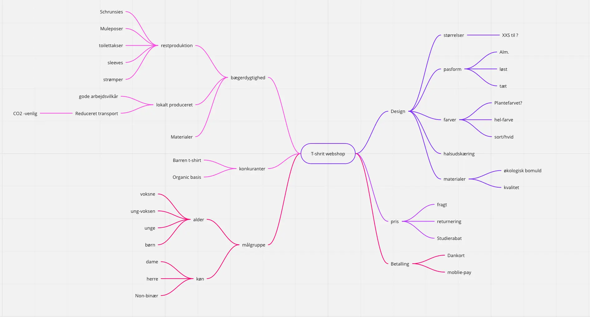
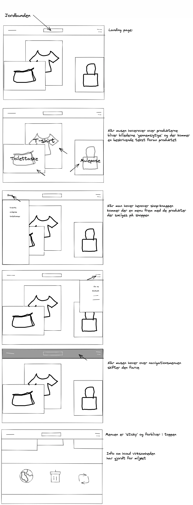
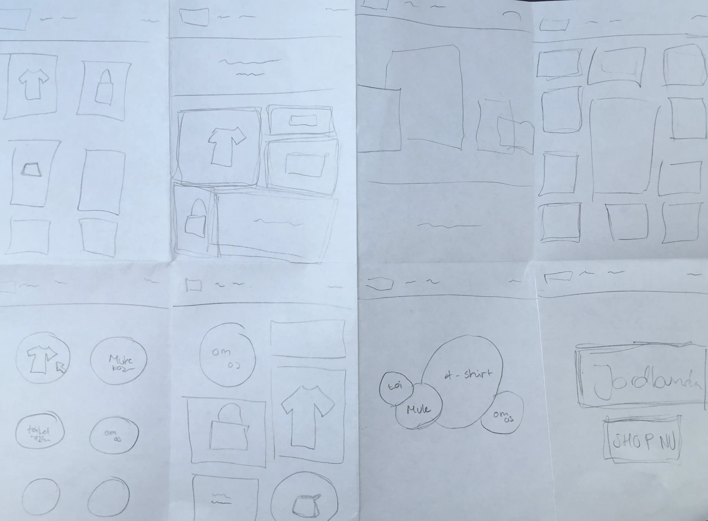
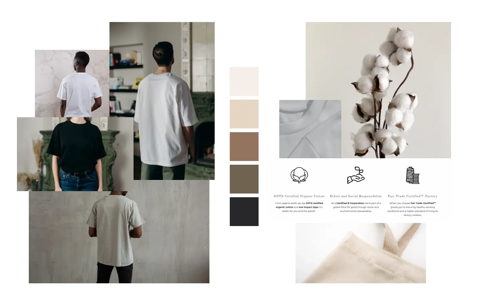
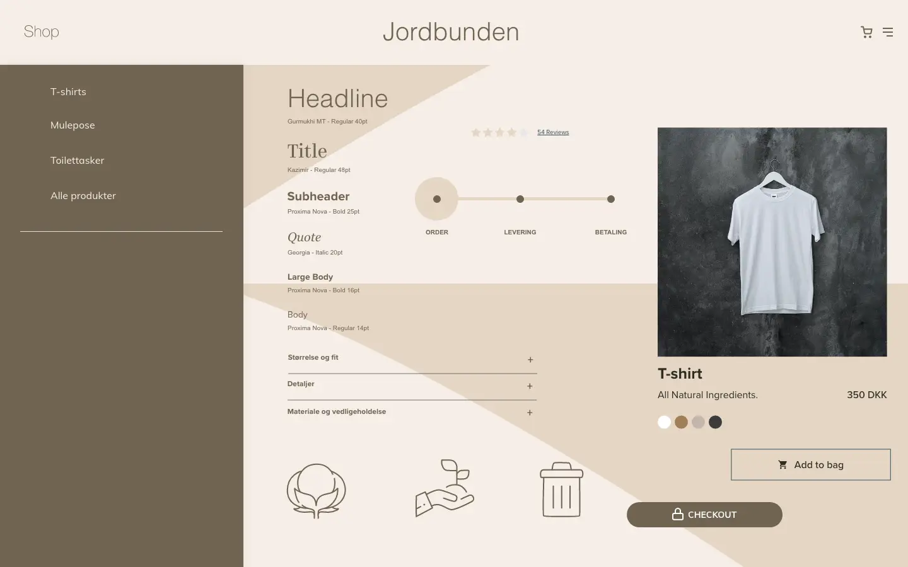

UX
I dette tema var det bruger som var i fokus. Vi lærte om konventioner og hvordan webdesign i høj grad er afhængig af af være brugervenlig så personen bag skærmen med ubesværet kan bevæge sig igennem sitet. Så funktionalitet er essentielt, i sær når der er tale om e-handle. Vi lærte om de former for research der kan give indsigt en en specifik målgruppe og give en forståelse for hvilke behov der skal imødekommes når man designer en webshops. Og hvordan man blandt andet gennem copy og mikro-copy kan påvirke forbrugeren. Hele temaet munde ud i en klikbar-protype lavet i XD, som skulle testes på målgruppen gennem en 'Five-act'-test også kaldet en tænke-højt-test. Dette tema gav en masse redskaber til at kunne forstå hvor vigtig det er at have forbrugen, og de forventede web-konventioner i tankerne når man snakker om webdesign. I kan via linket her gå ind og klikke jer rundt i prototypen.
Research
Desk Research
Det ligger lidt i ordet, at denne type reasrch er noget man kan foretage ved skrivebordet. Det er første step til at få en forståelse og viden indenfor temaet og emnet inden man tager fat i målgruppe direkte.
Findings:
- Minimalistiske websites
- Dansk designet produceret i U-lande
- Økologisk bomuld er bedre for miljøet end bambus
Mind Map
Artikler
En del af desk reseaersh er at finde information om det der skal sælges og hvordan market forholder sig. Derfor fandt jeg frem til disse links hvor jeg tilegnede mig viden som var relevant for det brand jeg skulle iværksætte.
Bægerdygtighed:
Artikel fra information om en bæredygtig tøjbrancheArtikel fra Forbrugerrådet Tænk om bæredygtig mærker og materialer
Textil materialer:
Artikel fra Sustain Your Style om texile materialer og bæredygtigForbrugeren & onlinehandel:
Artikel fra Danmarks Statistik som bladt andet kortlægger danskernes brug af e-handelE-commerce:
Artikel fra Klean om bud på bæredygtig eCommerceArtikel fra 99designs om hvordan man skaber et stærkt brand
Konkurrenter:
BAREEN T-SHIRTOrganic Basics
Interview
Som metode:
Når man bruger et interview kan man komme helt tæt på det enkelte individ der er i ens målgruppe. Det er en måde at få kend skab til vane og præference. Det er en metoder der fortæller meget om en lille del af helheden. For modsat et spørgeskema der oftest rammer flere mennekser, tages der ved et interview kun fat i en elle få mennekser ud af målgruppen.
Udførelsen af interviewet
Jeg tog hjem til min søster, der befinder sig i det segment jeg gerne vil henvende min webshop til. Jeg tænkte det var smart at møde personen der skulle interviews i trygge rammer. Så en god kop kaffe i sofaen med et enkelt stearinlys på bordet satte de perfekte rammer for dette interview.
De vigtigts indsigter
- Interviews personen for trækker at shoppe i en fysisk butik
- Returneringen er der som afholder interviews personen fra at købe online
- Det at der er tænkt over posen/indpakningen har en betydning
- At kvaliteten er god er vigtigt
- At materialet (t-shirten) er tungt er vigtig
- At der er diversitet i pasformen/halsudskæring vil ramme bredere
- En plain, farvet t-shirt er den fortrukne style
- Prisen har en afgørende rolle for om en studerende har mulighed for at købe bæredygtigt.
- Arbejdsforholdende for dem der producere produkt er vigtige.
Survey Research
En trejde form for research er at lave en survey, hvor man kan tilegne sig en masse viden om målgruppen, direkte fra det tiltænkte målgruppe. Vi blev her introduceret til Google forms hvor vi lærte om hvordan man laver en god survey der stiller de rigtige spørgsmål og genrer brugbarer svar. Derudover blev vi gjordt bekendt med de forskelligetyper af svarmuligheder som Googleforms tilbyder og hvornår det er relevant at bruge hvilke. neden for ses nogle af de indsigter der blev fundet frem til igennem surveyen.
Som metode:
Når man bruger en survey eller et spørgeskema som metode i en undersøgelse giver det et overordet kendskab til hvordan en større gruppe af individer agerer. Der stilles her ikke skarpt på det enkelte individ men det er langt mere generaliserende og ikke lige så “underhuden” som et interview.
Bæredygtighed har en betydning for de fleste når de køber tøj
70% ville genre vente på at en vare skal produceres bæredygtigt
T-shirt der er ensfarvet uden print er dem der oftes bliver købt
Sketching & idegenerering
Vi ser her forskelige skitserings metoder som hjalp mig i idegenereringssprocessen. Blandet øvelsen 'Crazy's 8' hvor vi hurtigt uden formeget tanke skulle tegne 8 forskellige løsninginger på en ide til layoutet for vores landing page til vores webshop. Det satte nogle tanker i gang og udfordrede den første ide man havde fået til en mulig opstilling. Efter denne øvelse, skulle vi lave et udkast til en Solution sketch. Hvor vi satte ord på hvilke funktioner prototypen skulle indholde. Her efter fik vi feedback fra vores medstuderende omkring hvilke funktioner de synes godt om.
Solution Sketch
Crazy 8's - ider til landing page
Moodboard
Styletile
Photoshop & billedeindhold
Billederne vi skulle bruge i vores webshop skulle vi del producere, og redigere. Jeg bruge en nyer Iphone, og imponerede billeder i photoshop hvor der blev ande en smule på varmen i billederne for at de bedre ville gå i spænd med farverne på prototypen. Jeg har sat blur på omgivelserne omkring t-shirten for at sætte produktet i fokus. Jeg tog også billeder ef min toilettaske som var det andet produkt i min webshop. Trejde produkt var en mule pose hvor jeg fandt et royalty-free billede der passede ind i min æstetik.
Kør musen over for at se de redigerede billeder
Pitch
Som slutning på tema 3, skulle vi pitche vores webshop og fortælle om processen og hvad der ligger til grunde for designet af prototypen. Pitch som er lavet som et google slides, kan ses via linket her.